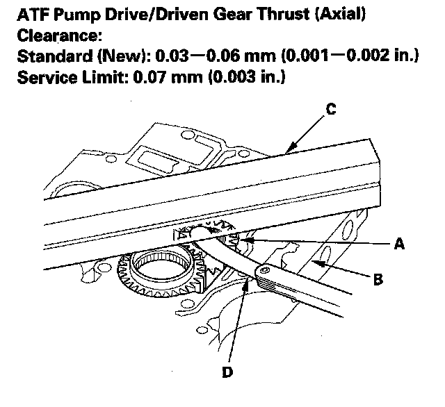
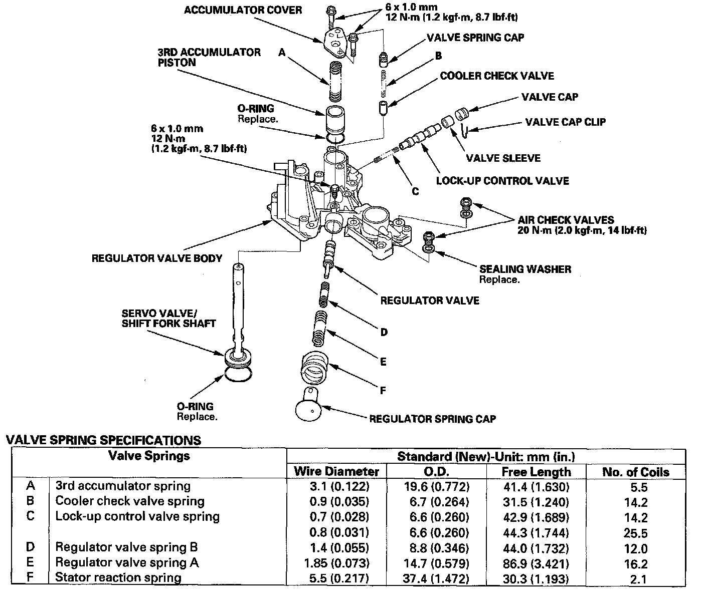
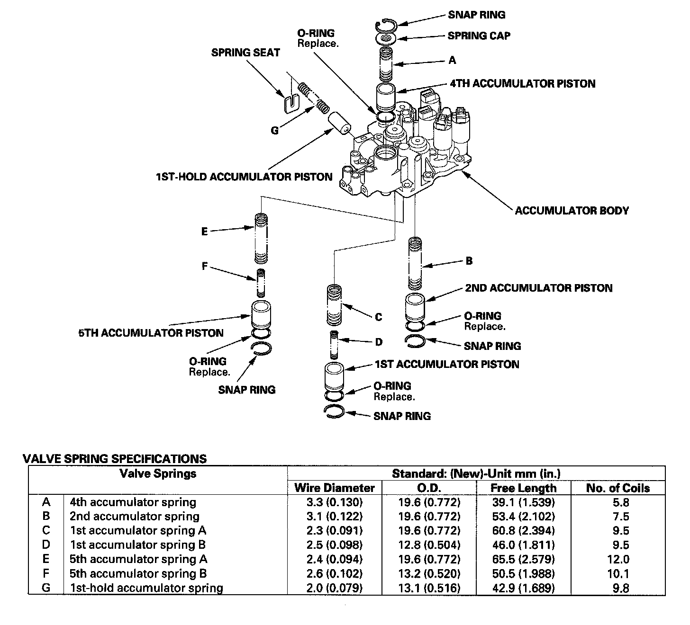

Valve Body Disassemble & Service
Valve Body RepairNOTE: Valve body repair is only necessary if one or more of the valves in a valve body do not slide smoothly in their bores. Use this procedure to free the valves.
1. Soak a sheet of # 600 abrasive paper in ATF for about 30 minutes.
2. Carefully tap the valve body so the sticking valve drops out of its bore. It may be necessary to use a small screwdriver to pry the valve free. Be careful not to scratch the bore with the screwdriver.
3. Inspect the valve for any scuff marks. Use the ATF-soaked # 600 paper to polish off any burrs that are on the valve, then wash the valve in solvent and dry it with compressed air.
4. Roll up half of the ATF-soaked # 600 paper and insert it in the valve bore of the sticking valve. Twist the paper slightly, so that it unrolls and fits the bore tightly, then polish the bore by twisting the paper as you push it in and out.
NOTE: The valve body is aluminum and doesn't require much polishing to remove any burrs.
5. Remove the # 600 paper. Thoroughly wash the entire valve body in solvent, then dry it with compressed air.
6. Coat the valve with ATF, then drop it into its bore. It should drop to the bottom of the bore under its own weight. If not, repeat steps 4 and 5, then retest. If the valve still sticks, replace the valve body.
7. Remove the valve, and thoroughly clean it and the valve body with solvent. Dry all parts with compressed air, then reassemble using ATF as a lubricant.
Valve Body Valve Installation
1. Coat all parts with ATF before assembly.
2. Install the valves and springs in the sequence shown for the main valve body secondary valve body regulator valve body and accumulator body. Refer to the following valve cap illustrations, and install each valve cap so the end shown facing up will be facing the outside of the valve body, then secure the valve cap with the valve cap clip.
3. Install the valve (A) and valve spring (B) in the valve body. Push the valve spring in with a screwdriver, then install the spring seat (C).
Main Valve Body Disassembly, Inspection, and Reassembly
1. Clean all parts thoroughly in solvent, and dry them with compressed air. Blow out all passages.
2. Inspect the main valve body for scoring and damage.
3. Check all valves for free movement. If any fail to slide freely, refer to valve body repair.
4. Coat all parts with ATF during assembly.
5. Replace the filter with new one, and install it and the lubrication check valve in the direction shown.
ATF Pump Inspection
1. Install the ATF pump drive gear (A) driven gear (B) and ATF pump driven gear shaft (C) in the main valve body (D). Lubricate all parts with ATF, and install the ATF pump driven gear with its grooved and chamfered side facing up.
2. Measure the side clearance of the ATF pump drive gear (A) and driven gear (B).
3. Remove the ATF pump driven gear shaft. Measure the thrust clearance between the ATF pump driven gear (A) and the valve body (B) with a straight edge (C) and a feeler gauge (D).

Secondary Valve Body Disassembly, Inspection, and Reassembly
1. Clean all parts thoroughly in solvent, and dry them with compressed air. Blow out all passages.
2. Do not use a magnet to remove the check balls, it may magnetize the check balls.
3. Inspect the secondary valve body for scoring and damage.
4. Check all valves for free movement. If any fail to slide freely, refer to valve body repair.
5. Coat all parts with ATF during assembly.
Regulator Valve Body Disassembly, Inspection, and Reassembly
1. Clean all parts thoroughly in solvent, and dry them with compressed air. Blow out all passages.
2. Inspect the regulator valve body for scoring and damage.
3. Hold the regulator spring cap in place while removing the stop bolt. The regulator spring cap is spring loaded. Once the stop bolt is removed, release the spring cap slowly so it does not pop out.
4. Check all valves for free movement. If any fail to slide freely, refer to valve body repair.
5. Coat all parts with ATF during assembly.
6. Align the hole in the regulator spring cap with the stop bolt hole, then press the spring cap into the valve body, and tighten the stop bolt.
7. Install the servo valve with the new O-ring, and 3rd accumulator piston with the new O-ring.

Accumulator Body Disassembly, Inspection, and Reassembly
1. Clean all parts thoroughly in solvent, and dry them with compressed air. Blow out all passages.
2. Inspect the accumulator body for scoring and damage.
3. Coat all parts with ATF during assembly.
4. Replace the O-rings with new ones.

Shift Solenoid Valve Removal and Installation
NOTE: Do not hold the solenoid valve connector to remove and install the solenoid valve. Be sure to hold the solenoid valve body.
1. Remove the mounting bolts, then remove the solenoid valves by holding the solenoid valve body.
2. Install the new O-rings (E) on each solenoid valves.
NOTE: If you are installing a new solenoid valve, it comes with new O-rings already installed.
3. Install shift solenoid valve D (black connector) by holding the shift solenoid valve body; be sure to install mounting bracket contacts to the accumulator body.
4. Install shift solenoid valve A (black connector) by holding the shift solenoid valve body; be sure to install mounting bracket contacts to the accumulator body.
5. Install shift solenoid valve C (brown connector) by holding the shift solenoid valve body; be sure to position the mounting bracket on top of the bracket of shift solenoid valve A.
NOTE: Do not install shift solenoid valve C before installing shift solenoid valve A. If shift solenoid valve C is installed before installing shift solenoid valve A, it may damage to hydraulic control system.
6. Install shift solenoid valve B (brown connector) by holding the shift solenoid valve body; be sure the mounting bracket contacts the accumulator body.